M01 · 侧向车辆尚未通过就继续加速（NR）
Base NC/TTC=1；SARA NC/TTC=0，2.5–3.5s 与橙色车辆出现采样车身重叠。Base 先等再起步，SARA 提前加速。 实际四秒行程 4.1→14.1m；2 秒速度 0.4→3.3m/s。


GIF · 前视画面 · PDF · 2/3/3.5/4s 关键帧
先看 M01、M03、M06。M01–M05 为NR，M06/M07为R；每例两边模式相同。全部 DAC 两边为1，按碰撞/TTC/推进退化挑选。
上排Base、下排SARA；左2秒、右4秒。橙色为同一目标车辆；另附中间关键帧、速度/行程/间隙曲线。
Base NC/TTC=1；SARA NC/TTC=0，2.5–3.5s 与橙色车辆出现采样车身重叠。Base 先等再起步，SARA 提前加速。 实际四秒行程 4.1→14.1m；2 秒速度 0.4→3.3m/s。
GIF · 前视画面 · PDF · 2/3/3.5/4s 关键帧
Base 按右转方向减速，SARA 加速并更趋直行，3.5s 起与橙色卡车重叠，NC/TTC 1→0。此例同时有路线差异，不能只归因速度。 实际四秒行程 13.2→25.7m；2 秒速度 5.0→7.1m/s。
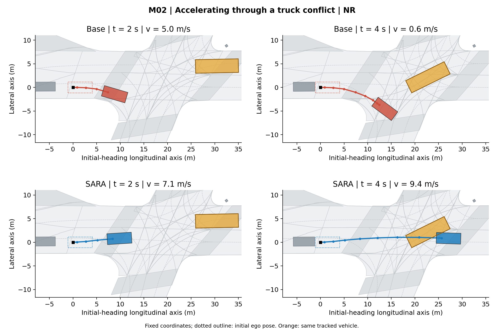
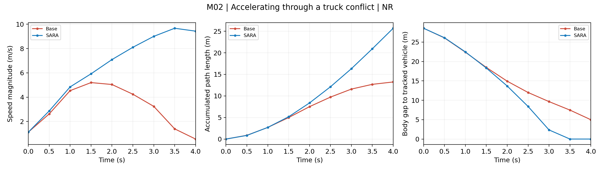
GIF · 前视画面 · PDF · 2/3/3.5/4s 关键帧
两边 NC/DAC=1，TTC 1→0。SARA 在减速后重新加速，3s 左右与目标车最近间隙约 0.11m；未检出离散采样车身重叠。 实际四秒行程 10.1→29.2m；2 秒速度 1.4→7.9m/s。

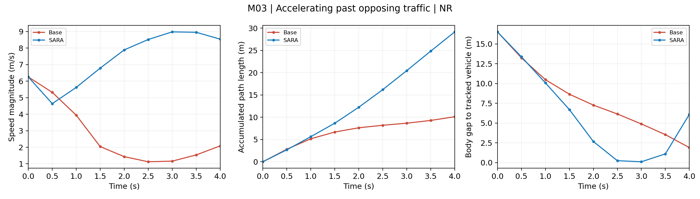
GIF · 前视画面 · PDF · 2/3/3.5/4s 关键帧
正式 NC/DAC 两边均为 1，TTC 1→0；SARA 在 3–3.5s 有几何车身重叠，不能称为无接触，也不能改写为正式有责碰撞。 实际四秒行程 4.2→21.6m；2 秒速度 0.1→5.4m/s。
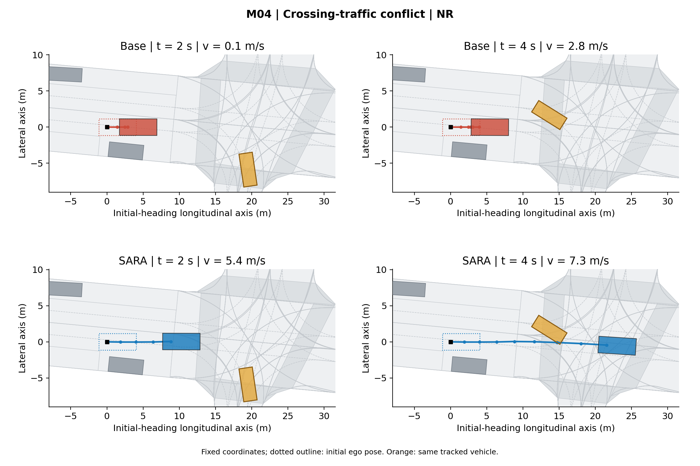
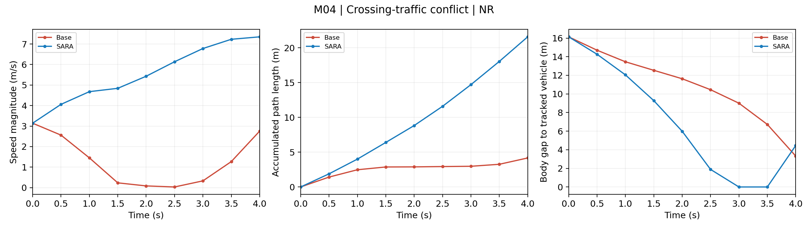
GIF · 前视画面 · PDF · 2/3/3.5/4s 关键帧
Base NC=1，SARA NC=0。SARA 更早接近停车，随后右后侧车辆接近并在 3.5s 出现重叠。SARA 另有约 0.87m 累计回退，不能把失败全归因于减速。 实际四秒行程 7.9→5.6m；2 秒速度 1.7→0.3m/s。
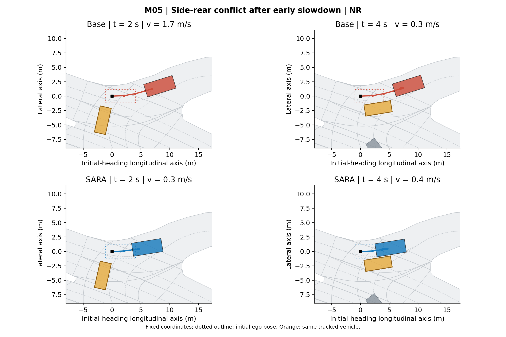
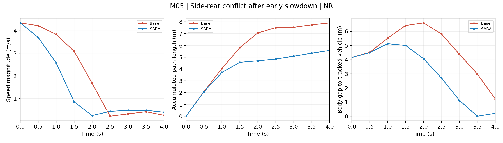
GIF · 前视画面 · PDF · 2/3/3.5/4s 关键帧 · 3.5s 多视角相机
两边 NC/DAC/TTC=1。Base 跟随前车加速，SARA 继续降到近停，与前车间隙从约 8.2m 扩到约 17.9m，EP 1→约0.19。 实际四秒行程 9.9→1.7m；2 秒速度 1.9→0.3m/s。
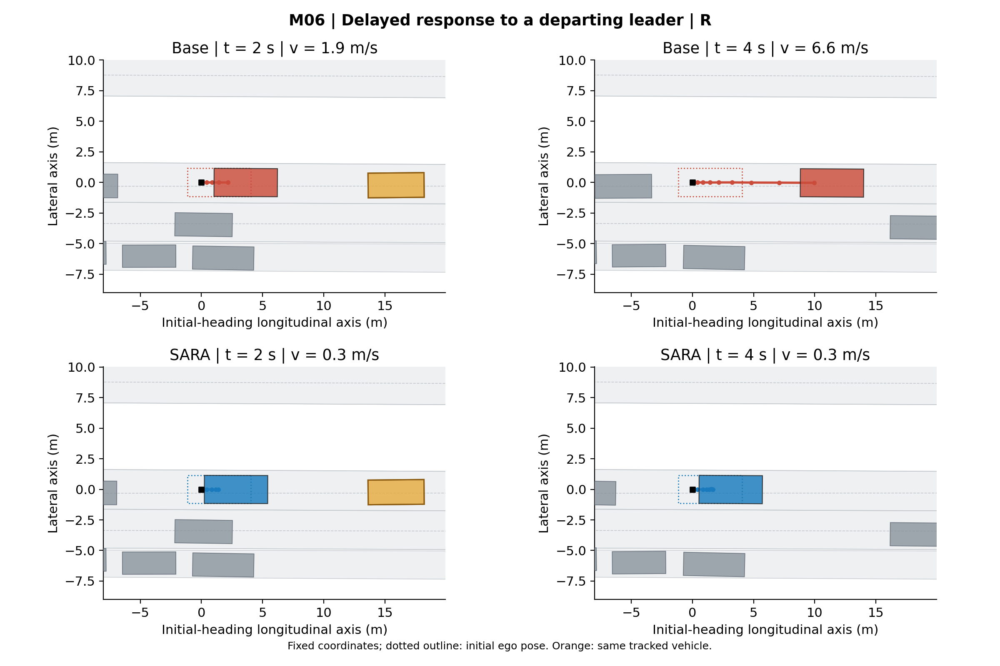
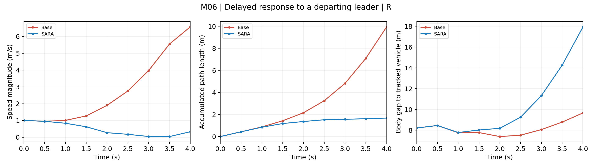
两边 NC/DAC/TTC=1；Base 四秒推进约27m，SARA 约4m，EP 1→约0.19。SARA 有约0.28m 回退；其停车动机和完整路权无法仅凭画面确认。 实际四秒行程 27.3→3.8m；2 秒速度 6.7→0.4m/s。
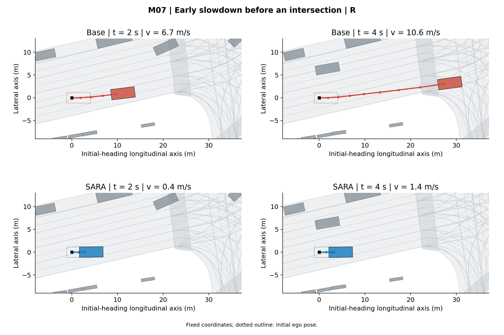
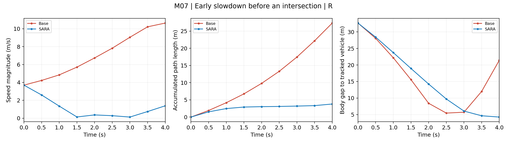